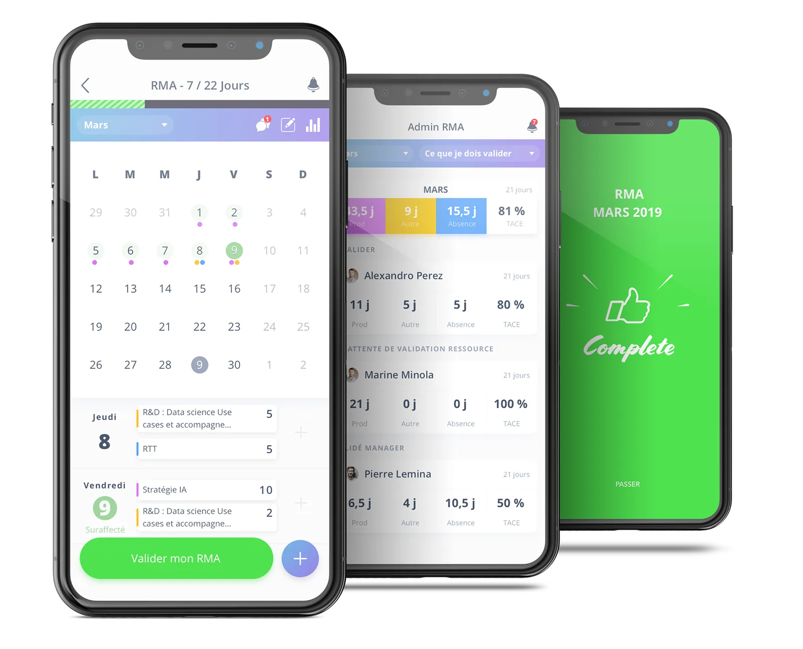
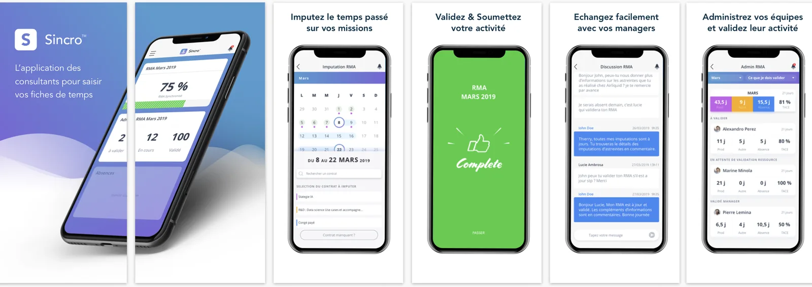
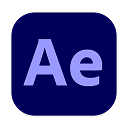
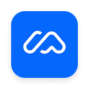
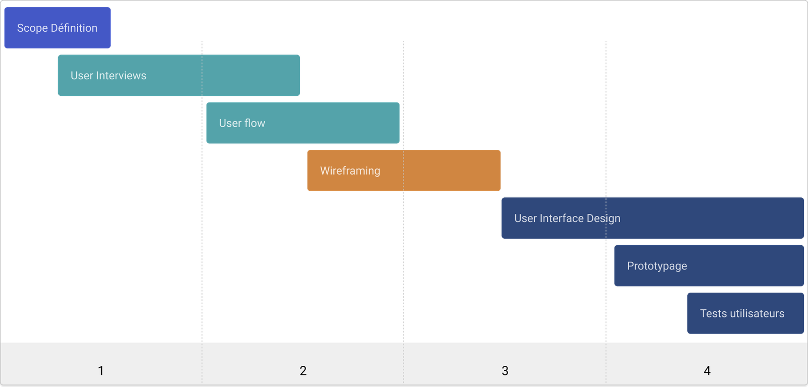
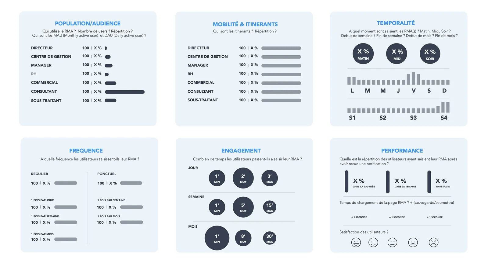
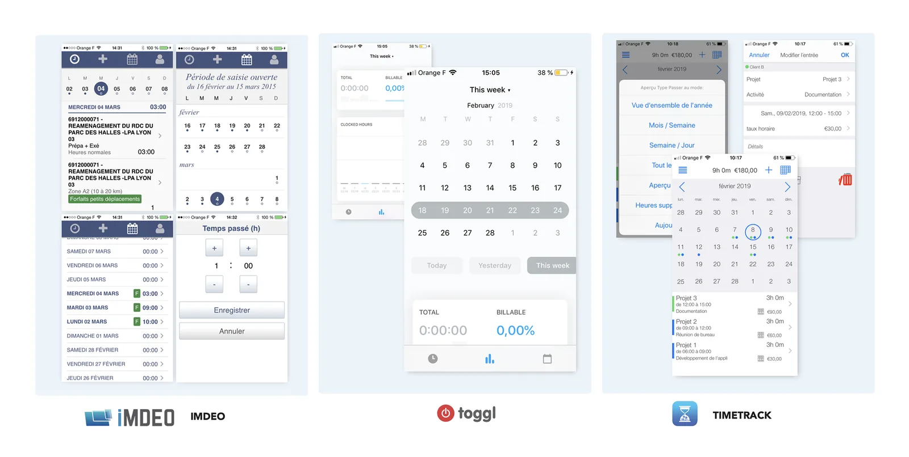
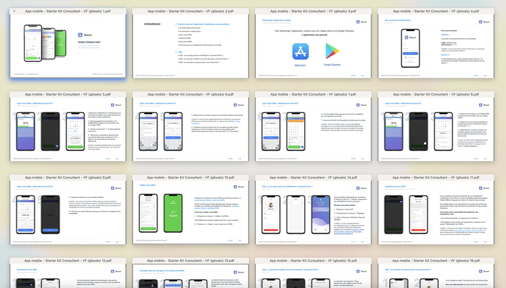

The pocket app for consultants on assignment
Time tracking, activity reports, absences. The best everyday app for all consultants.

The mission
Sincro is the mobile app every consultant on assignment has been waiting for. The service lets users enter their activity time quickly and easily, wherever they are. Thanks to its direct connection with the web solution, users can fill in and complete their monthly activity report on the go. It was also essential to simplify the contract-addition request process, making it more accessible than ever, directly with their manager. For managers, Sincro is a powerful tool that lets them not only add new contracts but also validate reports and get a complete overview, including production time, time spent between contracts and absences across their whole team. The solution also measures the TACE (activity rate excluding leave). Our main goal was to simplify the user experience as much as possible and improve communication between these two user groups. Sincro was designed to be as intuitive and efficient as possible, making time and contract management as simple as possible for every user.

Simplify the time-entry experience
Replace email requests to managers
Offer a dedicated communication channel
Automate & notify entry reminders
My role
As Product Designer, I led all the work related to the design of the app. During this project, I had the pleasure of working closely with our internal Product Manager, Damien Mordaque, as well as with the teams of the Creatiwity agency for the app development: Johan Dufau as Lead Mobile Backend Developer and Julien Blatecky as Lead Mobile Frontend Developer.
Main tasks
- Interview and Scope
- Research and ideation
- Design execution and prototyping
- Design validation
Design & Research Toolkit
 MiroSketchZeplinInterview
MiroSketchZeplinInterview
After Effects
MazePlanning
The project unfolded in 4 main phases: scope definition, user interviews, journeys & userflow, wireframing, interface finalization, prototyping and user testing.

Research deck
Usage analysis
First, to build our research deck, we leveraged the web solution's data (KPIs) to analyze how users actually use the platform. Our analysis covered different criteria depending on user typologies: population/audience, mobility, timing of needs, frequency, engagement, performance and satisfaction. We also cross-referenced all this data with individual interviews.
For confidentiality reasons, the data in the visual above is masked.

Competition
In our research deck we also analyzed all the players in the competitive market. This allowed us to identify best practices, but also to audit existing solutions in order to offer an even more intuitive experience when designing the Sincro app.

The solution
User interface
Once the ideation work was explored, we worked on designing the final UIs. Here is a summary.
Documentation
To maximize user adoption, we also documented all the features available in the app. This work allowed our clients to promote the app launch internally and increase their employees' engagement.

Prototype
Find the prototype on Figma. For confidentiality reasons the prototype is not accessible at the moment.
The impact
After the store release in March 2019, we analyzed app usage versus web usage over the following 3 months. Here are some key figures: